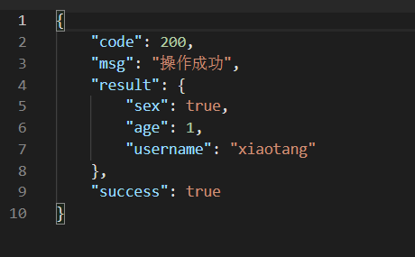
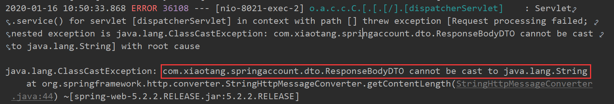
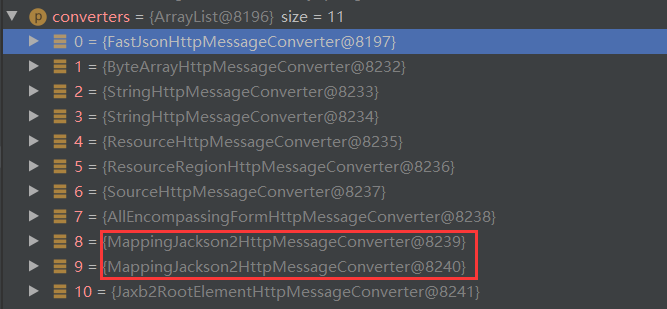
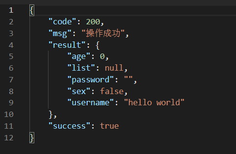

在我们使用SpringBoot编写接口的时候，最好是返回一个统一格式的JSON，该格式包含错误码，附带信息，以及携带的数据。这样前端在解析的时候就能统一解析，同时携带错误码可以更加容易的排查错误。
添加ResponseBodyAdvice
ResponseBodyAdvice接口里一共包含了两个方法
supports:该组件是否支持给定的控制器方法返回类型和选择的{@code HttpMessageConverter}类型。用于判断是否需要做处理。beforeBodyWrite:在选择{@code HttpMessageConverter}之后调用，在调用其写方法之前调用。用于做返回处理。
com.xiaotang.springaccount.dto.ResponseBodyDTO1
2
3
4
5
6
7
8
9
10
11
12
13
14
15
16
17
18
|
@Getter
@Setter
public class ResponseBodyDTO {
private String msg;
private Integer code;
private Object result;
private Boolean success;
public ResponseBodyDTO(Object result) {
this.code = 200;
this.success = true;
this.msg = "操作成功";
this.result = result;
}
public ResponseBodyDTO(){}
}
|
com.xiaotang.springaccount.config.ResponseDataHandler1
2
3
4
5
6
7
8
9
10
11
12
13
14
15
16
17
18
19
20
21
| @ControllerAdvice
public class ResponseDataHandler implements ResponseBodyAdvice {
@Override
public boolean supports(MethodParameter methodParameter, Class aClass) {
return true;
}
@Override
public Object beforeBodyWrite(Object body, MethodParameter returnType, MediaType mediaType, Class aClass, ServerHttpRequest serverHttpRequest, ServerHttpResponse serverHttpResponse) {
if(! (body instanceof ResponseBodyDTO)){
ResponseBodyDTO responseBodyDTO = new ResponseBodyDTO();
responseBodyDTO.setCode(200);
responseBodyDTO.setMsg("操作成功");
responseBodyDTO.setSuccess(true);
responseBodyDTO.setResult(body);
body = responseBodyDTO;
}
return body;
}
}
|
效果
1
2
3
4
5
6
7
8
| @PostMapping("getMap")
public Map<String, Object> getMap(){
Map<String, Object> map = new HashMap<>();
map.put("username", "xiaotang");
map.put("age", 1);
map.put("sex", true);
return map;
}
|

返回结果已经成功包装了。
遇到的问题
com.xiaotang.springaccount.controller.LoginController1
2
3
4
5
6
7
8
9
| @RestController
@RequestMapping("login")
public class LoginController {
@PostMapping("test")
public String test(){
return null;
}
}
|
如果如上所示，最后返回值是null，则会报错，因此需要再添加一个 HttpMessageConverter

添加 HttpMessageConverter
简单来说只要在添加 WebMvcConfigurer中添加 MappingJackson2HttpMessageConverter
com.xiaotang.springaccount.config.WebConfigurer1
2
3
4
5
6
7
8
| @Configuration
public class WebConfigurer implements WebMvcConfigurer {
@Override
public void configureMessageConverters(List<HttpMessageConverter<?>> converters) {
converters.add(0, new MappingJackson2HttpMessageConverter());
}
}
|
converters 列表里的转换器位置越靠前，优先级越高，因此在后面的转换器可能会被覆盖，因此我们自己添加的converter 最好添加在前面，以免失效。
使用 FastJsonHttpMessageConverter
如果你使用 Spring MVC 来构建 Web 应用并对性能有较高的要求的话，可以使用 Fastjson 提供的FastJsonHttpMessageConverter 来替换 Spring MVC 默认的 HttpMessageConverter 以提高 @RestController @ResponseBody @RequestBody 注解的 JSON序列化速度。而且可选择的配置也很多。
FastJsonHttpMessageConverter 可以将返回对象中的 list: null 转换成 []，还可以给 int 、 boolean、string 附上初始值 0、false、””。
FastJsonHttpMessageConverter是基于fastjson的一种HttpMessageConverter，spring系统默认使用的是MappingJackson2HttpMessageConverter，因此添加的 fastJsonHttpMessageConverter 一定要放在MappingJackson2HttpMessageConverter 之前。

com.xiaotang.springaccount.config.WebConfigurer1
2
3
4
5
6
7
8
9
10
11
12
13
14
15
16
17
18
19
20
21
22
23
24
25
26
27
28
29
30
31
32
33
34
35
36
37
| @Configuration
public class WebConfigurer implements WebMvcConfigurer {
@Override
public void configureMessageConverters(List<HttpMessageConverter<?>> converters) {
FastJsonHttpMessageConverter fastConverter = new FastJsonHttpMessageConverter();
FastJsonConfig fastJsonConfig = new FastJsonConfig();
SerializerFeature[] serializerFeatures = new SerializerFeature[]{
SerializerFeature.WriteMapNullValue,
SerializerFeature.WriteNullNumberAsZero,
SerializerFeature.WriteNullStringAsEmpty,
SerializerFeature.WriteNullBooleanAsFalse,
SerializerFeature.WriteDateUseDateFormat,
SerializerFeature.DisableCircularReferenceDetect,
};
fastJsonConfig.setSerializerFeatures(serializerFeatures);
fastJsonConfig.setCharset(Charset.forName("UTF-8"));
fastConverter.setFastJsonConfig(fastJsonConfig);
converters.add(0, fastConverter);
}
}
|
效果
com.xiaotang.springaccount.dto.UserInfo1
2
3
4
5
6
7
8
9
10
| @Getter
@Setter
public class UserInfo {
private String username;
private String password;
private Integer age;
private List<String> list;
private Boolean sex;
}
|
com.xiaotang.springaccount.controller.LoginController1
2
3
4
5
6
| @PostMapping("testobject")
public UserInfo testobject(){
UserInfo userInfo = new UserInfo();
userInfo.setUsername("hello world");
return userInfo;
}
|
返回值：

list, string, boolean 类型都是非null了。
参考 Spring Boot配置接口 WebMvcConfigurer
参考链接
-------------本文结束 感谢您的阅读-------------